Project 02 · Banco do Brasil × Leapfone
Smartphone subscription inside the BB app
The full case, board by board: context, decisions, trade-offs, states and results. This is the same working material, not a summary.
Assinatura de smartphone dentro do App BB
Como levar um contrato de locação de 21 meses para dentro do app de um banco, trazendo para antes da assinatura as regras que a pessoa vai viver depois.
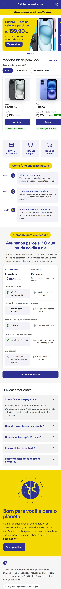
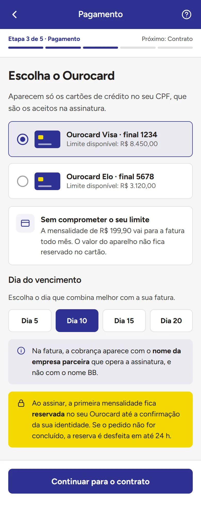
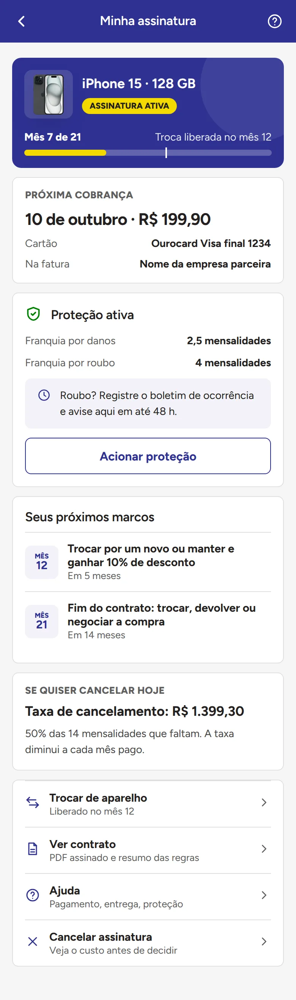
Smartphone subscription inside the BB app
How to bring a 21-month rental contract into a bank's app, moving the rules people will live with to before they sign, not after.
Um produto de contrato longo, num canal que já conhece o cliente
A Leapfone assina smartphones em contrato de locação: a pessoa paga uma mensalidade, o aparelho segue da Leapfone e a proteção contra roubo e danos vem inclusa. No site, preço e forma de pagamento são os motivos de desistência mais citados na pesquisa de carrinho abandonado.
A parceria com o BB começou como piloto em dezembro de 2023 e virou contrato em 2025. O banco acompanha todo mês duas métricas: novas assinaturas por safra e o volume pago nos cartões Ourocard.
Dentro do App BB, o ponto de partida muda: a pessoa já está autenticada, os dados já existem e o cartão já é do próprio CPF. O projeto desenha a experiência completa dentro do app, da vitrine ao fim do contrato, a partir dessa vantagem.
A long-contract product, in a channel that already knows the customer
Leapfone rents out smartphones on subscription: the customer pays a monthly fee, the device stays owned by Leapfone, and theft and damage protection is included. On the website, price and payment method are the most cited reasons for abandoning a purchase, according to the cart-abandonment survey.
The partnership with BB started as a pilot in December 2023 and became a formal contract in 2025. Every month, the bank tracks two metrics: new subscriptions per cohort and the volume paid on Ourocard credit cards.
Inside the BB app, the starting point changes: the customer is already authenticated, their data already exists, and the card is already registered to their own tax ID. This project designs the complete experience inside the app, from storefront to end of contract, building on that advantage.
Um MVP que desenhei e está no ar, e a experiência dentro do app
An MVP I designed that's live, and the experience inside the app
Três pontos de atrito que o canal precisava resolver
Fonte: levantamento da jornada B2C da Leapfone (site, 12 meses), com funil de pedidos, termos de uso, contratos e CRM. São números do canal site, não do canal BB.
Three points of friction the channel needed to solve
Source: Leapfone's B2C journey mapping (website, 12 months), covering the order funnel, terms of use, contracts and CRM. These are website-channel numbers, not BB-channel numbers.
A evidência mudou onde o App BB ajuda de verdade
A pesquisa é autodeclarada e respondida por quem desistiu. Os recortes sobre BB vêm de uma base pequena e servem como sinal qualitativo, não como estatística. Fontes: levantamento da jornada B2C, pesquisa de carrinho abandonado da Leapfone e reunião de alinhamento de 09/09/2026.
The evidence changed where the BB app actually helps
The survey is self-reported and answered only by people who gave up. The BB-specific slices come from a small base and work as a qualitative signal, not a statistic. Sources: B2C journey mapping, Leapfone's cart-abandonment survey, and the alignment meeting on 09/09/2026.
Nenhuma regra descoberta depois do clique.
O objetivo não era só encurtar a contratação. Era fazer o caminho mais curto ser também o mais claro, porque num contrato de 21 meses a frustração cobra a conta no fim.
No rule discovered after the click.
The goal wasn't just to shorten the sign-up flow. It was to make the shortest path also the clearest one, because on a 21-month contract, frustration sends its bill at the end.
Vender o que cabe no mês e o que já vem incluso
Selling what fits the month, and what's already included
Dados e cartão vêm do banco, com consentimento explícito
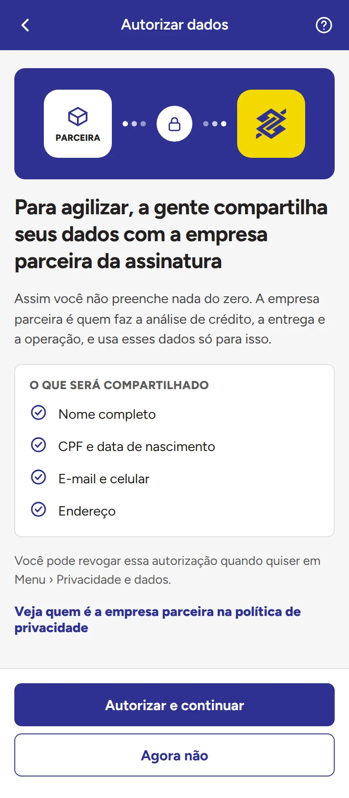
Data and card come from the bank, with explicit consent
Separar “não” de “ainda não”
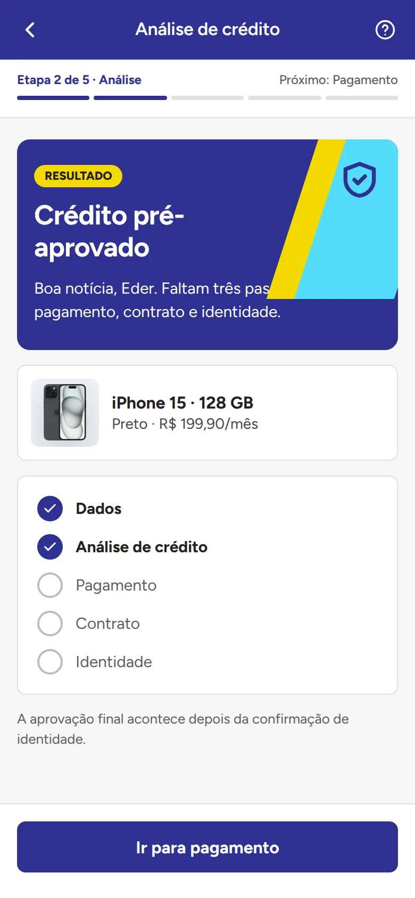
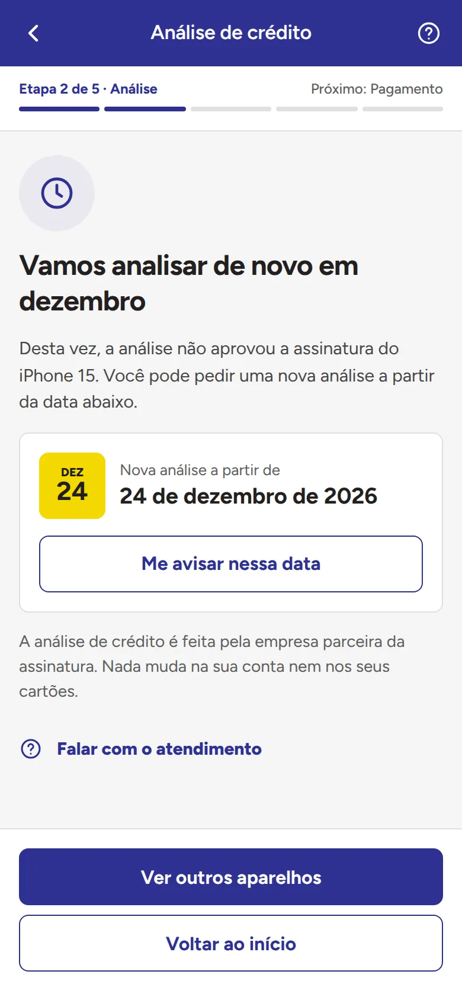
Separating “no” from “not yet”
As regras entram no fluxo, antes do aceite
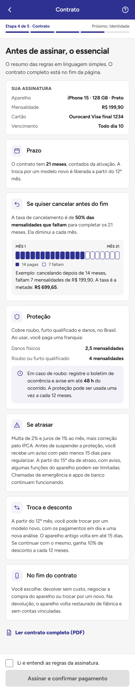
Se quiser cancelar antes do fim
A taxa é de 50% das mensalidades que faltam para completar os 21 meses.
The rules enter the flow, before acceptance
If you want to cancel before the end
The fee is 50% of the monthly payments remaining to complete the 21 months.
O contrato continua visível depois de assinar
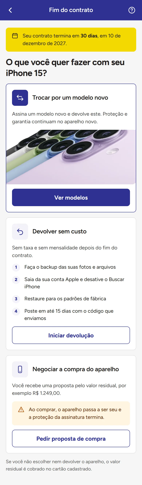
The contract stays visible after signing
Do meu primeiro wireframe à proposta dentro do app
À esquerda, telas do wireframe inicial que desenhei para o App BB. À direita, a proposta atual.
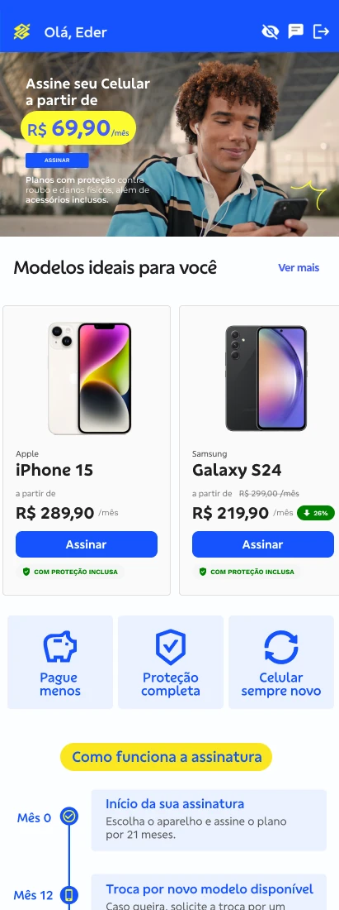
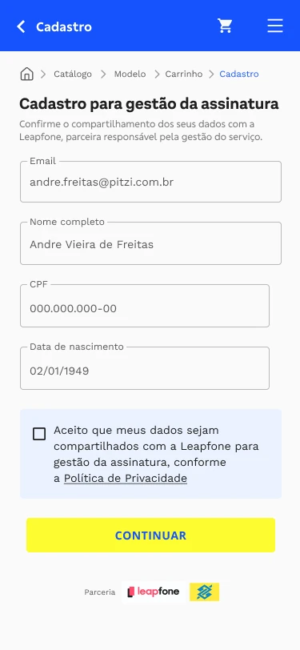
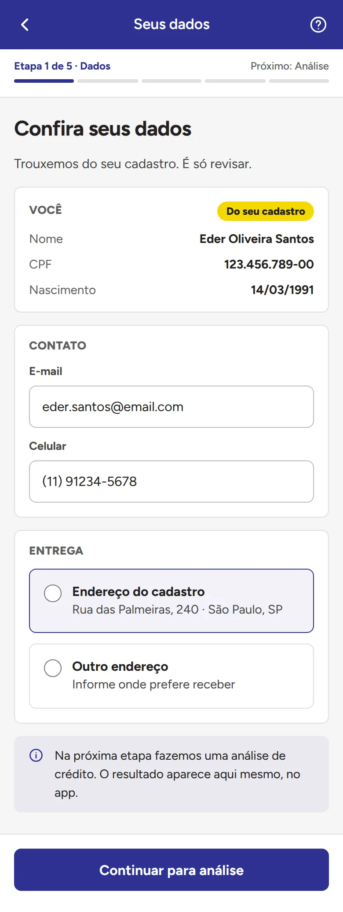
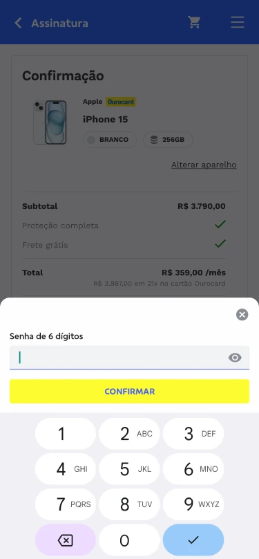
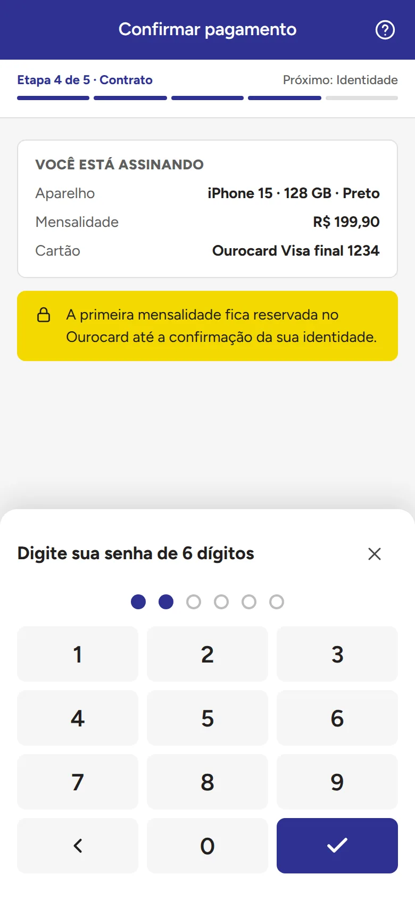
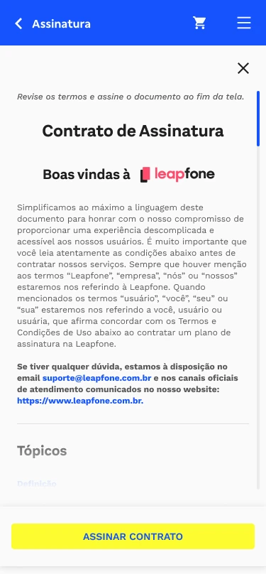
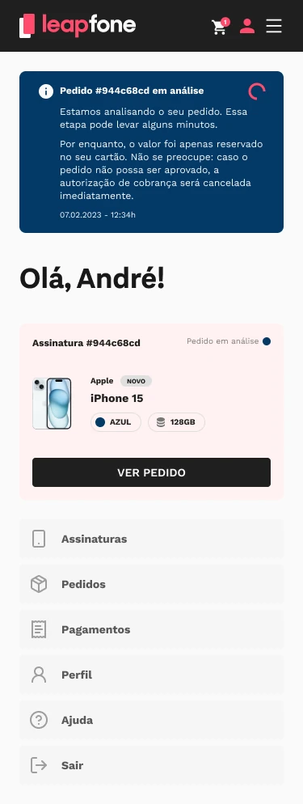
From my first wireframe to the current in-app proposal
On the left, screens from the initial wireframe I designed for the BB app. On the right, the current proposal.
O desafio não era esconder a complexidade do contrato. Era decidir em que momento cada regra aparece.
The challenge wasn't hiding the contract's complexity. It was deciding at which moment each rule should appear.
Quatro mudanças no desenho que vieram do trabalho com outras áreas
Cada uma começou numa restrição do produto, do negócio ou do banco. Nenhuma foi decisão só de design.
Four design changes that came out of working with other teams
Each one started as a constraint from product, business, or the bank. None was a design-only decision.
O manual do BB para parceiros virou requisito de design
O BB define dois modos de comunicação com parceiros. Como a assinatura vive dentro do app e é oferecida a clientes BB, o fluxo segue o modo de promoção exclusiva.
Fonte: Guia de uso da marca e identidade visual em parcerias, Banco do Brasil. O arquivo oficial da marca BB para parcerias substitui os marcadores antes da entrega.
BB's partner brand guidelines became a design requirement
BB defines two modes for communicating with partners. Since the subscription lives inside the app and is offered to BB customers, the flow follows the exclusive-promotion mode.
Source: Banco do Brasil's Brand Usage and Visual Identity Guide for Partnerships. The official BB partner brand assets replace these placeholders before delivery.
Catorze etapas, quatro fases, um protótipo navegável
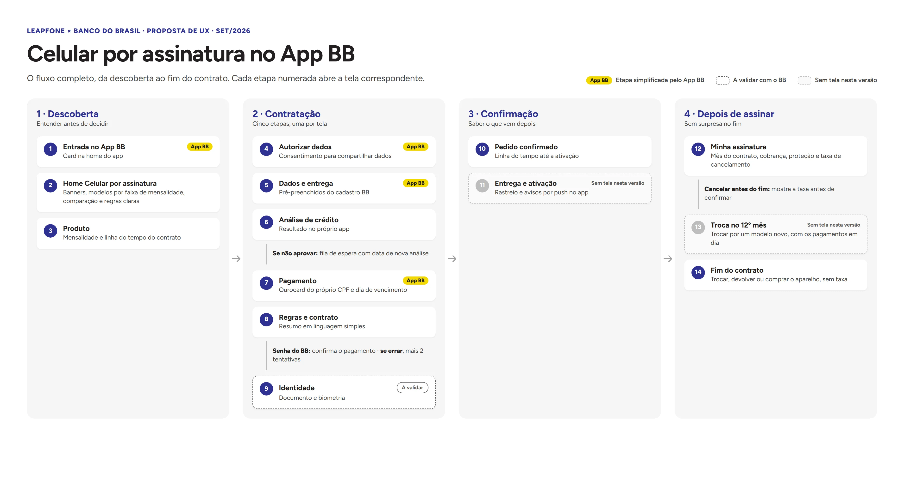
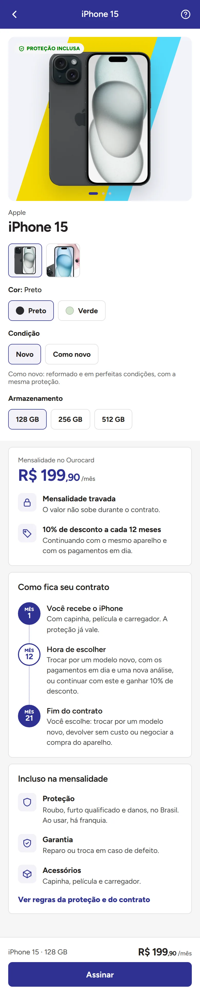
Fourteen steps, four phases, one navigable prototype
O que acontece quando o caminho não é o feliz
Cinco estados que o fluxo precisa cobrir, cada um com o próximo passo na própria tela.
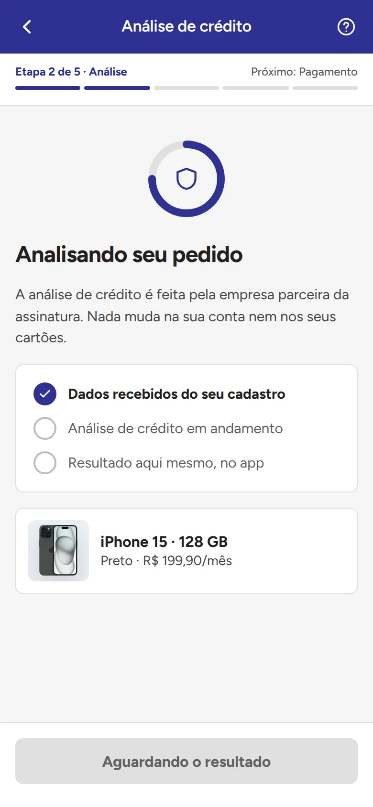
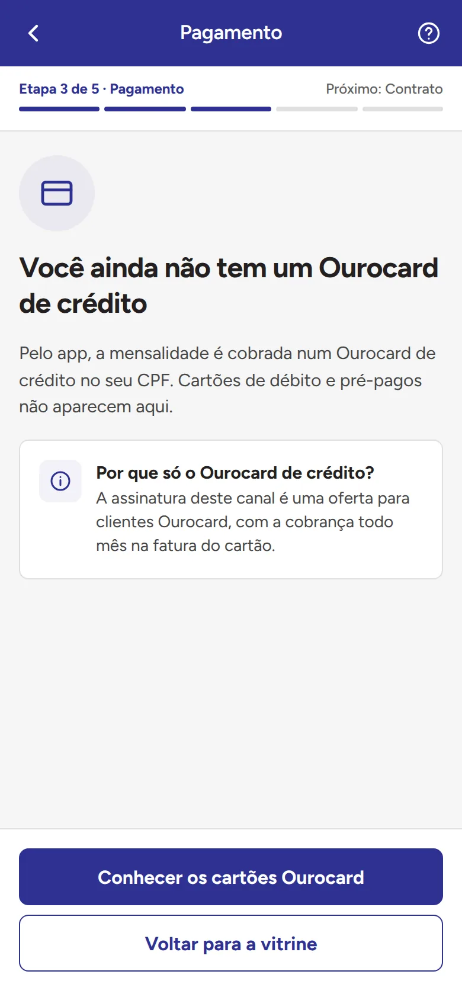
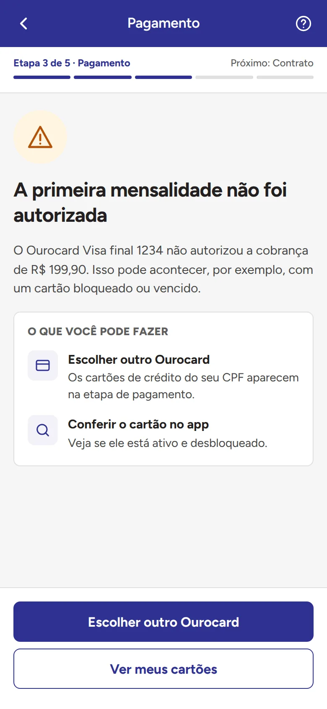
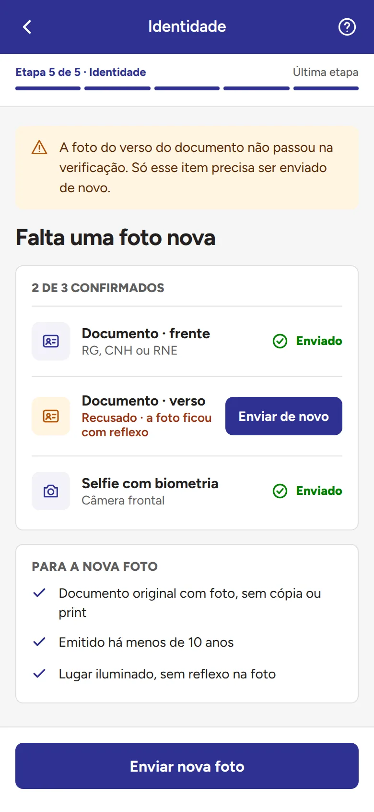
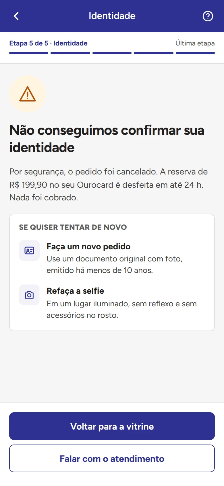
What happens when the path isn't the happy one
Five states the flow needs to cover, each with its next step right on the screen.
O cuidado está nas partes pequenas
50% das 14 mensalidades que faltam. A taxa diminui a cada mês pago.
The care is in the small parts
50% of the 14 remaining monthly payments. The fee drops with every month paid.
Como a proposta vira produto
Mapeei cada tela contra o que o sistema já expõe. No mapeamento, apareceram divergências entre a documentação contratual e o comportamento do sistema, que precisam de alinhamento antes do lançamento. As dependências abaixo foram validadas com os times de negócios, produto, marketing e comercial.
Transição que dispara
Estado de saída
Canal: tela, push ou e-mail
Se o estado não chegar
O estado existe hoje?
How the proposal becomes a product
I mapped every screen against what the system already exposes. That mapping surfaced mismatches between the contract documentation and the system's actual behavior, which need alignment before launch. The dependencies below were validated with the business, product, marketing and sales teams.
Triggering transition
Exit state
Channel: screen, push or email
If the state doesn't arrive
Does the state exist today?
O que já foi medido e como medir o que vem
Os resultados medidos são do MVP do canal BB, que está no ar. A experiência dentro do app ainda não foi lançada, então não há métrica dela.
What's already been measured, and how to measure what's next
The measured results belong to the BB channel MVP, which is live. The in-app experience hasn't launched yet, so it has no metrics of its own.
Num produto de contrato longo, a experiência não termina no pagamento. A tela que evita o problema no mês 21 precisa existir no dia 1.
Nota: modelos e preços são exemplos inspirados no catálogo do canal BB. As regras de contrato nas telas seguem os termos de uso públicos do canal. Os números do funil são do site. A marca BB nas telas aguarda o arquivo oficial.
In a long-contract product, the experience doesn't end at payment. The screen that prevents a problem in month 21 needs to exist on day 1.
Note: device models and prices are illustrative examples inspired by the BB channel catalog. The contract rules on screen follow the channel's public terms of use. Funnel numbers come from the website. The BB brand on screen awaits the official assets.
Want to see another project?
There's also a case with AIB Bank and a healthcare app redesign for Unimed in the portfolio.
View all projects